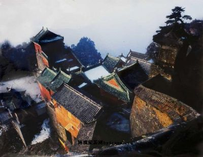
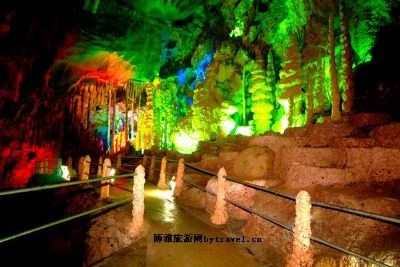
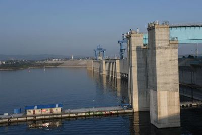
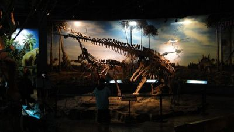
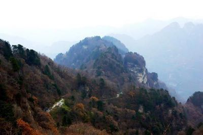

在秦岭余脉与大巴山东段之间的中国中央山地中，有一颗璀璨的明珠——十堰。
十堰市位于湖北省西北部，地处鄂、豫、渝、陕交界地带，是一个美丽的山城，新兴的现代车城，又是一个我国内陆山区唯一的国家级园林城市，更是一个旅游战略地位十分重要的“中国优秀旅游城市”。
十堰市旅游资源丰富多彩，高品位、世界级的旅游产品蜚声中外。她东有世界文化遗产、著名道教圣地武当山、“中国汉民族民歌第一村”、“中国民间故事村”和亚洲第一大人工淡水湖、南水北调中线工程水源地——丹江口水库；南有“野人”谜踪的原始森林神农架、千里房县流放文化和饮浴两用的温泉；西有史学家称之为“内长城”的楚长城和奇美秀丽的十八里长峡及堵河漂流风景区；北有世界罕见的白垩纪恐龙蛋化石群和恐龙骨骼化石遗址；市区内有风景秀丽的伏龙山自然保护区和世界第三大卡车生产基地——东风汽车公司。这里，远古历史文化遗存与现代社会文明交相辉映，壮美的自然风光和浓郁的风土民情异彩纷呈，构成了一幅幅美丽的旅游画卷。欢迎您来到十堰旅游。
十堰是三峡——神农架——武当山——西安黄金旅游线上的一颗璀璨明珠，六大类25处各具特色的风景名胜遍及全市，境内有道教圣地武当山，有轰动中外的郧县猿人遗址和恐龙蛋化石群，有亚洲第一大人工湖——丹江口水库，还有新近发现的鸟脚类恐龙骨架化石
十堰主要旅游景点：武当山 ·紫霄宫·南岩宫 ·丹江大坝 ·太子坡 ·玄岳门 ·琼台三观 ·五龙河 ·小太平洋 ·遇真宫 ·磨针井 ·元和观 ·金殿 ·五龙宫·飞升崖 ·老营 ·龙头香 ·玉虚宫 ·天柱峰 ·黄龙洞 ·赛武当自然保护区 ·四方山植物园 ·人民公园 ·伏龙山·太和宫 ·复真观 ·松涛山庄
武当山又名太和山，位于湖北十堰市南，武当山最早的寺观为唐代所建，明永乐年间，明成祖在京建完故宫后，由工部侍郎郭瑾率原班人马，浩浩荡荡开进武当山，共建造7宫，2观，36庵和72崖庙等建筑群。 武当山以宏伟的建筑规模著称于世。现有古建筑群均采取皇家建筑法式，统一设计布局。其规模的大小，间距的疏密都恰到好处，达到时隐时现、若明若暗、欲扬先抑、前呼后应、玄妙超然的艺术效果。国务院于1982年公布武当山为全国重点风景名胜区，称：武当山古建筑工程浩大，工艺精湛，成功地体现了“仙山琼阁”的意境，犹如我国古建筑成就的展览。北宋大书画家米芾将之誉为“天下第一山”。
野人洞，在房县老人称古洞。后来发现洞内有蝙蝠，又叫蝙蝠洞。1998年11月21日，北京旅游专家王兴斌和市旅游局副局长李发平等人来房县视察，认为房县是野人的故乡，发现野人的次数最多，流传最广，流传的历史最久，直到现在仍是世界之谜，取名“野人洞”好。至此，定名为“野人洞”。房县野人洞地理位置及总括 在中国，提及起野人，人们都会不约而同的想到神农架。房县野人洞与神农架紧邻，位于房县桥上乡209国道旁，距县城45公里，这里山雄水美、谷幽峡险、古老的原始森林，成为自然博物馆。峡谷内有换彩峡、野浴滩、躲军洞、龙胆崖、瀑布群、野人睽谷、天绳攀崖、龙门顿开、绝壁城堡多处景点。洞外有寿桃峰、五行山、龙头岩、玉带山，峰峰相连，险峻雄奇，新建的听雨山庄，飞檐翘角，古朴典雅。这里是阳春赏花，盛夏避暑，深秋观景，严冬咏雪的旅游胜地 。 洞分上下两层、内有三厅四宫、天公造就的钟乳石群、似人似鸟、似花似锦、观音莲台……
丹江大坝位于丹江口市城区，在汉江与其支流丹江汇合口下游800米处．工程水工建筑物由混凝土坝、电站厂房、升船机提升系统及上游30公里的两座引水渠道组成．它是新中国成立后我国自行设计、自行建造和自行管理的以防洪为主，兼有发电、灌溉、航运、养殖等综合利用的大型水利枢纽工程．它不仅是根治汉江、开发汉江的关键工程．而且也是南水北调中线最佳的水源工程．挡水建筑物丹江大坝总长2.5公里，工程最大坝高97米，坝顶高程162米，内装6台发电机组，装机容量90万千瓦，平均发电量38.3亿度．如今，南水北调工程在即，丹江口水库将成为中线调水工程源头．届时，坝顶高已经增加到175米，该枢纽工程完建后，近期年均调水145亿立方米，远景调水可达230亿立方米．登上坝顶，鸟瞰丹江口城区，楼房林立，鳞次栉比，青山碧水，粉墙黛瓦尽收眼底．抬头远眺，武当山隐隐再现；回首平视，巍巍大坝锁汉江．构成了一幅绚丽多彩的画卷，是旅游、……
十堰黄龙滩旅游度假区位于鄂西北十堰市西郊堵河旁，湖北省十堰市黄龙滩水力发电厂周边,是堵河上一颗璀璨的水电明珠。黄龙滩旅游度假区由湖北黄龙滩水力发电厂建设开发，现代工业文明与自然生态文明在这里得到最完美的结合。黄龙滩旅游度假区由湖北黄龙滩水力发电厂建设开发。一直以来，黄龙滩电厂深入贯彻落实科学发展观，在抓好安全生产和经营管理工作的同时，牢记科学发展宗旨，以构建文明、和谐的生态旅游度假区为创意，对厂区及周边环境进行了重新规划与精雕细琢。如今，度假区已形成了多树种、多植物、多色彩、多层次的园林绿化体系，营造出三季有花，四季常绿，色彩斑斓的绿化效果。“樱花大道”、“杨梅大道”、“红枫林”、“盆景园”等高质量、高品味的绿化景观，集中体现了生态优化、景色优美、色彩环绕的园林立意蓝图。为了给游客提供更好的服务，度假区对水电宾馆进行扩建，修建了仿真培训中心、运动场馆、拓展基地，提升了度假区接待能力和接待档……

【十堰市博物馆】国家ＡＡＡＡ级旅游区。由中国建筑西南设计院设计，为地上３层建筑。建筑面积１万平方米，展厅面积４０００多平方米，总高３层计２４米，包括展厅、文物库房、研究室、报告厅等设施。博物馆按照科学、环保、安全等功能要求进行建筑设计。方案以人的抽象的眼睛作为构图的一个出发点，以象征人类探索和发现的途径。基本陈列有走进恐龙时代、远古人类家园、仙山琼阁武当山、十堰与水、东风之路、南水北调湖北库区出土文物展等。基本陈列《走入恐龙时代》以十堰地区出土的恐龙、恐龙蛋化石为依托，向观众传播关于恐龙的科学知识，如恐龙的生存环境、恐龙的繁衍、恐龙的种类、恐龙的习性和恐龙的灭亡之谜。《远古人类家园》以十堰出土的古人类化石、伴生动物化石及石制品为依托，向观众普及人类起源、进化和文明发展的知识。《仙山琼阁武当山》介绍武当山的历史沿革、建筑文化，从独特的角度展示世界文化遗产——武当山古建筑群的文化内涵和文化特性……
【武当南神道景区】国家ＡＡＡＡ级景区。位于世界文化遗产武当山西南麓，素有武当后花园之美誉。距武当山金顶（天柱峰）５．７公里，是过去川、陕、鄂西北、鄂西南等地香客敬香的重要神道。相传唐中宗李显被武则天贬至房县时，每年定期朝拜武当。因吕家河村毗邻房县，李显便新辟了这条进香之路。当时武当山香火旺盛，来自四川、陕西和鄂西南的朝山百姓，纷纷从这条路上山，一时香客络络不绝。南神道群山如花，数峰如笋，大河如练，美景如画，民歌如潮。茂密的原始森林，清澈的小河流水，古朴天成胜景无限，这里是八百里武当的一块最原始、最神秘的幽静之地，景区全长２０公里，由中国汉族民歌第一村吕家河和直通金顶的黑金沟大峡谷两大景区组成，以九道河为玉带，像珍珠般串联着吕家河民歌村、红三军司令部旧址和新四军遗址、二龙戏珠、斩龙崖、尼姑岩、桃花洞、兰花谷、狮子滩、鬼谷子涧、天书谷、黑金沟大峡谷、龙潭、转运台、金蟾朝圣等众多景点。景区地址：……
